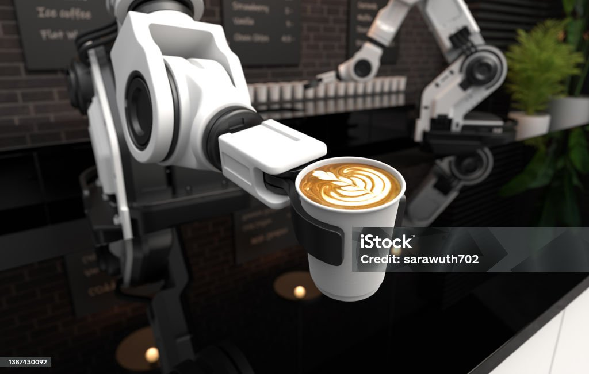

La modernización de la caficultura en México implica diversos aspectos, desde la adopción de tecnologías de producción y procesamiento hasta la promoción de prácticas agrícolas sostenibles y la diversificación del mercado.
Se promueve la adopción de tecnologías de producción, como la utilización de maquinaria moderna y técnicas de manejo del suelo y la fertilización.
Se busca la producción de café de manera sostenible, respetando el medio ambiente y las comunidades locales.
Se fomenta la producción de cafés especiales y la diversificación de productos derivados del café.
Se promueve la investigación y el desarrollo de nuevas variedades de café, así como la mejora de técnicas de procesamiento y comercialización.
Se implementan programas de financiamiento y asistencia técnica para apoyar a los pequeños productores.
Comparativa de métodos tradicionales vs. modernos:
| Aspecto | 1980-2000 | 2020-actualidad |
|---|---|---|
| Selección de granos | Manual | Escáneres hiperespectrales |
| Tueste | Experiencia artesanal | Control por termopares digitales |
| Productividad | 50 kg/día | 500 kg/día |
Frente a este panorama, invertir en herramientas tecnológicas como sensores de temperatura, RFID y computadores móviles, ya que permiten:
Explora estas plataformas mexicanas sobre café y tecnología:
Las nuevas máquinas reducen hasta un 40% el consumo energético y utilizan materiales 100% reciclables, marcando un hito en producción eco-amigable.